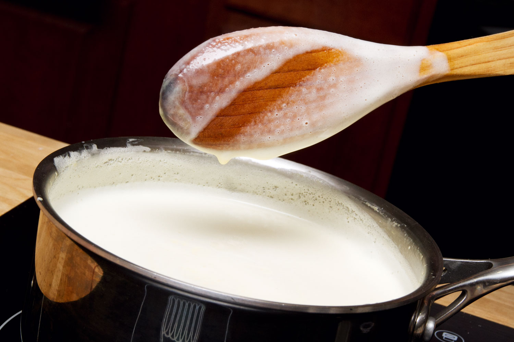

Welcome to the CIM 111 tutorial for how to do something.
Today you will learn how to make ice cream in simple steps.

Click on the image to begin
-
First, separate the eggs, placing the yolks in a large bowl. (You will not need the whites for this recipe. You can use them to make meringues.) Add the sugar to the egg yolks and whisk until pale and thick.
-

Add the cornflour and whisk well to incorporate into the egg yolks.Then Put the cream and milk into a medium saucepan.
-

Cut the vanilla pod open lengthways and scrape out the seeds with the back of a knife, then add to the cream and milk. Heat the cream and milk until just below boiling. Slowly pour the hot cream and milk onto the eggs and sugar, whisking as you go.
-

Sieve the custard into a clean pan, and set it over a very low heat. Stir the custard constantly with a wooden spoon, paying special attention to the corners of the pan, until it is steaming and has thickened slightly. The custard is ready when you can draw a clear line through it on the back of the wooden spoon. This can take up to 10 minutes.
-
Tip the custard into a large, shallow, freezer-proof container, and allow to cool to room temperature (you can speed this up by sitting the tub of custard in a large bowl of iced water).Once at room temperature, place a lid on the custard and chill in the fridge overnight.
-
Once chilled, transfer the custard to the freezer and take it out every hour, for three hours, to whisk it with an electric handheld whisk. This will disperse the ice crystals and keep it smooth.Then leave the ice-cream in the freezer for a final freeze, until it is solid.Remove the ice cream from the freezer 10 minutes before serving
Thank you for visiting my tutorial.
Come back soon!!